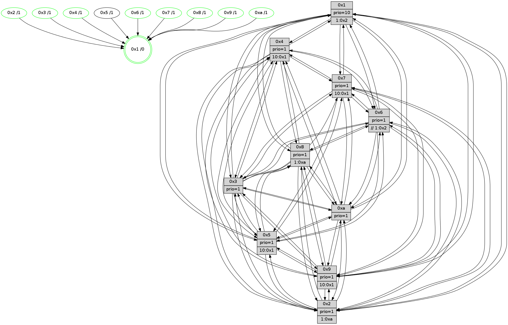

>> << IDX [start] -100 -25 -5 +0 +5 +25 +100 [1370.20022011]
 Previous packets
----------------------------------------------------------------------
1365.471435 beacon01(faad) #0 coord=01,02,03,04,05,06,07,0a,09,08 cycle=688.0ms assoc
-- color-indic=1 64 53 9c
1365.481418 beacon02(faad) #0 coord=01,02,03,04,05,06,07,0a,09,08 cycle=688.0ms assoc 64 c0 ad
1365.491417 beacon03(faad) #0 coord=01,02,03,04,05,06,07,0a,09,08 cycle=688.0ms assoc 64 ba e0
1365.501418 beacon04(faad) #0 coord=01,02,03,04,05,06,07,0a,09,08 cycle=688.0ms assoc 64 cd 0a
1365.511418 beacon05(faad) #0 coord=01,02,03,04,05,06,07,0a,09,08 cycle=688.0ms assoc 64 b7 47
1365.521418 beacon06(faad) #0 coord=01,02,03,04,05,06,07,0a,09,08 cycle=688.0ms assoc 64 39 90
1365.531418 beacon07(faad) #0 coord=01,02,03,04,05,06,07,0a,09,08 cycle=688.0ms assoc 64 43 dd
1365.541422 beacon0a(faad) #0 coord=01,02,03,04,05,06,07,0a,09,08 cycle=688.0ms assoc 64 32 d6
1365.561424 beacon08(faad) #0 coord=01,02,03,04,05,06,07,0a,09,08 cycle=688.0ms assoc 64 c6 4c
1365.572365 [Hello(1): seq=780 sym=4,2,9,5,10,3,8,6,7 sysInfo=coloring-mode-on,ColoringModeRequestCalled stat=4:8,2,4,2/2:7,8,13,5/9:3,0,1,1/5:13,7,3,8/10:5,15,0,8/3:7,1,15,10/8:6,9,15,2/6:11,14,14,0/7:6,12,7,1]
1365.575734 [Hello(5): seq=871 sym=7,6,4,3,1,9,8,10,2 sysInfo=hasWarning stat=7:0,5,12,0/6:6,9,10,4/4:7,12,1,14/3:11,3,5,2/1:3,7,3,0/9:2,1,13,10/8:3,5,15,4/10:2,15,15,9/2:10,2,6,7]
1365.578463 [Hello(6): seq=871 sym=2,3,5,4,7,9,8,10,1 sysInfo=hasWarning stat=2:1,3,1,0/3:0,1,0,0/5:7,11,3,3/4:0,15,6,7/7:0,13,0,15/9:8,3,12,10/8:12,3,9,6/10:13,8,3,13/1:6,2,15,1]
1365.581144 [STC(9)->1 #0.231 tree-change,inconsistent-stability,stable,to-color d=1]
1365.584031 [STC(10)->1 #0.231 tree-change,inconsistent-stability,stable,to-color d=1]
1365.586541 [Color(6) seq=503 @0:0 prio=1 >>1.@2,1.@3,1.@4]
1365.588633 [Color(9) seq=430 @0:0 prio=1 >10.@1,1.@5,1.@a]
1365.591427 [STC(2)->1 #0.231 tree-change,inconsistent-stability,stable,to-color d=1]
1365.593577 [Hello(3): seq=871 sym=1,7,6,2,4,8,9,10,5 sysInfo=hasWarning stat=1:13,7,3,0/7:11,11,6,14/6:5,8,2,0/2:12,5,15,2/4:4,6,9,12/8:3,10,0,5/9:2,0,8,0/10:3,12,12,5/5:1,7,10,0]
1365.596516 [Color(10) seq=460 @0:0 prio=1]
1365.598971 [Color(2) seq=447 @0:0 prio=1 >1.@a]
1365.606604 [STC(3)->1 #0.231 tree-change,inconsistent-stability,stable,to-color d=1]
1365.608570 [Color(3) seq=500 @0:0 prio=1]
----------------------------------------------------------------------
1366.259566 beacon01(faad) #0 coord=01,02,03,04,05,06,07,0a,09,08 cycle=688.0ms assoc
-- color-indic=1 64 ef 99
1366.269547 beacon02(faad) #0 coord=01,02,03,04,05,06,07,0a,09,08 cycle=688.0ms assoc 64 7c a8
1366.279549 beacon03(faad) #0 coord=01,02,03,04,05,06,07,0a,09,08 cycle=688.0ms assoc 64 06 e5
1366.289548 beacon04(faad) #0 coord=01,02,03,04,05,06,07,0a,09,08 cycle=688.0ms assoc 64 71 0f
1366.299549 beacon05(faad) #0 coord=01,02,03,04,05,06,07,0a,09,08 cycle=688.0ms assoc 64 0b 42
1366.309548 beacon06(faad) #0 coord=01,02,03,04,05,06,07,0a,09,08 cycle=688.0ms assoc 64 85 95
1366.319550 beacon07(faad) #0 coord=01,02,03,04,05,06,07,0a,09,08 cycle=688.0ms assoc 64 ff d8
1366.329555 beacon0a(faad) #0 coord=01,02,03,04,05,06,07,0a,09,08 cycle=688.0ms assoc 64 8e d3
1366.349554 beacon08(faad) #0 coord=01,02,03,04,05,06,07,0a,09,08 cycle=688.0ms assoc 64 7a 49
1366.362348 [Hello(9): seq=815 sym=2,5,3,4,7,6,8,1 sysInfo=hasWarning stat=2:1,0,13,10/5:7,4,15,7/3:4,6,6,3/4:5,13,1,1/7:6,4,6,4/6:0,7,11,13/8:4,3,1,5/1:6,7,2,1]
1366.364940 [Hello(4): seq=871 sym=5,8,6,2,3,9,7,10,1 sysInfo= stat=5:9,12,5,1/8:4,9,0,0/6:4,6,11,14/2:12,3,4,0/3:2,2,14,15/9:12,10,13,1/7:5,5,1,0/10:9,5,15,14/1:12,11,15,1]
1366.368084 [Hello(10): seq=804 sym=6,2,3,8,7,5,9,4,1 sysInfo=hasWarning stat=6:15,9,14,3/2:15,4,2,0/3:3,2,4,14/8:14,14,13,3/7:3,4,11,9/5:5,15,11,0/9:10,13,1,0/4:11,0,8,1/1:1,4,11,1]
1366.371754 [Color(4) seq=410 @0:0 prio=1 >10.@1,1.@2,1.@3,1.@5]
1366.374163 [Color(1) seq=551 @0:0 prio=10 >1.@2,1.@3,1.@4,1.@5]
1366.375781 [Hello(8): seq=815 sym=5,2,3,7,9,6,4,10,1 sysInfo=hasWarning stat=5:10,15,5,0/2:2,13,10,12/3:12,0,15,4/7:6,0,2,1/9:4,10,7,4/6:0,14,12,15/4:0,1,0,0/10:14,1,12,5/1:1,1,0,0]
1366.379550 [Color(8) seq=470 @0:0 prio=1 >1.@a]
1366.385489 [Hello(7): seq=871 sym=2,3,5,6,4,9,10,1 sysInfo=hasWarning stat=2:5,5,2,3/3:15,11,6,3/5:12,0,9,2/6:8,5,3,11/4:10,4,3,0/9:12,2,8,1/10:4,10,13,7/1:6,5,13,0]
1366.389457 [Color(7) seq=399 @0:0 prio=1 >10.@1,1.@5,1.@6,1.@8]
----------------------------------------------------------------------
1367.047696 beacon01(faad) #0 coord=01,02,03,04,05,06,07,0a,09,08 cycle=688.0ms assoc
-- color-indic=1 64 3b ac
1367.057679 beacon02(faad) #0 coord=01,02,03,04,05,06,07,0a,09,08 cycle=688.0ms assoc 64 a8 9d
1367.067680 beacon03(faad) #0 coord=01,02,03,04,05,06,07,0a,09,08 cycle=688.0ms assoc 64 d2 d0
1367.077679 beacon04(faad) #0 coord=01,02,03,04,05,06,07,0a,09,08 cycle=688.0ms assoc 64 a5 3a
1367.087678 beacon05(faad) #0 coord=01,02,03,04,05,06,07,0a,09,08 cycle=688.0ms assoc 64 df 77
1367.097680 beacon06(faad) #0 coord=01,02,03,04,05,06,07,0a,09,08 cycle=688.0ms assoc 64 51 a0
1367.107680 beacon07(faad) #0 coord=01,02,03,04,05,06,07,0a,09,08 cycle=688.0ms assoc 64 2b ed
1367.117684 beacon0a(faad) #0 coord=01,02,03,04,05,06,07,0a,09,08 cycle=688.0ms assoc 64 5a e6
1367.137685 beacon08(faad) #0 coord=01,02,03,04,05,06,07,0a,09,08 cycle=688.0ms assoc 64 ae 7c
1367.149779 [Hello(5): seq=872 sym=7,6,4,3,1,9,8,10,2 sysInfo=hasWarning stat=7:1,6,12,0/6:6,10,10,4/4:8,13,1,14/3:12,4,6,2/1:4,8,3,0/9:3,2,13,10/8:4,6,15,4/10:3,0,15,9/2:11,3,7,7]
1367.152280 [Hello(1): seq=781 sym=4,2,9,5,10,3,8,6,7 sysInfo=coloring-mode-on,ColoringModeRequestCalled stat=4:8,2,4,2/2:7,9,14,5/9:4,1,2,1/5:14,7,3,8/10:5,0,1,8/3:8,2,0,10/8:7,10,15,2/6:12,15,15,0/7:7,13,7,1]
1367.154732 [Color(10) seq=461 @0:0 prio=1]
1367.156915 [Hello(2): seq=868 sym=4,5,7,6,3,9,8,10,1 sysInfo=hasWarning stat=4:8,15,3,12/5:11,0,11,2/7:4,13,4,1/6:4,7,2,0/3:0,2,1,0/9:12,4,5,9/8:12,13,15,12/10:7,13,1,11/1:11,1,12,0]
1367.159935 [Hello(3): seq=872 sym=1,7,2,4,8,9,10,5 asym=6 sysInfo=hasWarning stat=1:14,8,3,0/7:12,12,6,14/2:12,5,15,2/4:5,7,9,12/8:4,11,0,5/9:3,0,8,0/10:4,12,12,5/5:2,7,10,0/6:5,8,2,0]
1367.162811 [Color(3) seq=501 @0:0 prio=1]
1367.165069 [Color(9) seq=431 @0:0 prio=1 >10.@1,1.@5,1.@a]
1367.167564 [Hello(6): seq=872 sym=2,3,5,4,7,9,8,10,1 sysInfo=hasWarning stat=2:1,4,2,0/3:1,2,1,0/5:8,11,3,3/4:1,0,6,7/7:1,14,0,15/9:9,4,12,10/8:13,4,9,6/10:14,9,3,13/1:7,3,15,1]
1367.171660 [Color(6) seq=504 @0:0 prio=1 >>1.@2,1.@3,1.@4]
1367.173821 [Color(2) seq=448 @0:0 prio=1 >1.@a]
----------------------------------------------------------------------
1367.835829 beacon01(faad) #0 coord=01,02,03,04,05,06,07,0a,09,08 cycle=688.0ms assoc
-- color-indic=1 64 87 a9
1367.845810 beacon02(faad) #0 coord=01,02,03,04,05,06,07,0a,09,08 cycle=688.0ms assoc 64 14 98
1367.855811 beacon03(faad) #0 coord=01,02,03,04,05,06,07,0a,09,08 cycle=688.0ms assoc 64 6e d5
1367.865813 beacon04(faad) #0 coord=01,02,03,04,05,06,07,0a,09,08 cycle=688.0ms assoc 64 19 3f
1367.875812 beacon05(faad) #0 coord=01,02,03,04,05,06,07,0a,09,08 cycle=688.0ms assoc 64 63 72
1367.885812 beacon06(faad) #0 coord=01,02,03,04,05,06,07,0a,09,08 cycle=688.0ms assoc 64 ed a5
1367.895813 beacon07(faad) #0 coord=01,02,03,04,05,06,07,0a,09,08 cycle=688.0ms assoc 64 97 e8
1367.905817 beacon0a(faad) #0 coord=01,02,03,04,05,06,07,0a,09,08 cycle=688.0ms assoc 64 e6 e3
1367.925816 beacon08(faad) #0 coord=01,02,03,04,05,06,07,0a,09,08 cycle=688.0ms assoc 64 12 79
1367.938003 [Hello(10): seq=805 sym=6,2,3,8,7,5,9,4,1 sysInfo=hasWarning stat=6:0,10,14,3/2:0,5,2,0/3:4,3,4,14/8:15,15,13,3/7:4,5,11,9/5:6,15,11,0/9:10,14,1,0/4:11,1,8,1/1:1,5,11,1]
1367.942343 [Hello(7): seq=872 sym=2,3,5,6,4,9,10,1 sysInfo=hasWarning stat=2:6,6,2,3/3:0,12,6,3/5:13,0,9,2/6:9,6,3,11/4:10,4,3,0/9:13,3,8,1/10:4,11,13,7/1:7,5,13,0]
1367.944711 [Hello(8): seq=816 sym=5,2,3,7,9,6,4,10,1 sysInfo=hasWarning stat=5:11,15,5,0/2:3,14,10,12/3:13,1,15,4/7:7,1,2,1/9:5,11,7,4/6:1,15,12,15/4:0,1,0,0/10:14,2,12,5/1:2,1,0,0]
1367.948176 [Hello(9): seq=816 sym=2,5,3,4,7,6,8,10,1 sysInfo=hasWarning stat=2:1,1,13,10/5:8,4,15,7/3:4,6,6,3/4:6,14,1,1/7:7,5,6,4/6:1,8,11,13/8:5,4,1,5/10:0,0,0,0/1:6,8,2,1]
1367.951367 [Color(7) seq=400 @0:0 prio=1 >10.@1,1.@5,1.@6,1.@8]
1367.953356 [Color(8) seq=471 @0:0 prio=1 >1.@a]
1367.958257 [Hello(4): seq=872 sym=5,8,6,2,3,9,7,10,1 sysInfo= stat=5:10,12,5,1/8:5,10,0,0/6:5,7,11,14/2:13,4,4,0/3:3,3,14,15/9:13,11,13,1/7:6,6,1,0/10:9,6,15,14/1:13,12,15,1]
1367.961377 [Color(4) seq=411 @0:0 prio=1 >10.@1,1.@2,1.@3,1.@5]
----------------------------------------------------------------------
1368.623959 beacon01(faad) #0 coord=01,02,03,04,05,06,07,0a,09,08 cycle=688.0ms assoc
-- color-indic=1 64 43 a7
1368.633942 beacon02(faad) #0 coord=01,02,03,04,05,06,07,0a,09,08 cycle=688.0ms assoc 64 d0 96
1368.643941 beacon03(faad) #0 coord=01,02,03,04,05,06,07,0a,09,08 cycle=688.0ms assoc 64 aa db
1368.653942 beacon04(faad) #0 coord=01,02,03,04,05,06,07,0a,09,08 cycle=688.0ms assoc 64 dd 31
1368.663942 beacon05(faad) #0 coord=01,02,03,04,05,06,07,0a,09,08 cycle=688.0ms assoc 64 a7 7c
1368.673941 beacon06(faad) #0 coord=01,02,03,04,05,06,07,0a,09,08 cycle=688.0ms assoc 64 29 ab
1368.683942 beacon07(faad) #0 coord=01,02,03,04,05,06,07,0a,09,08 cycle=688.0ms assoc 64 53 e6
1368.693946 beacon0a(faad) #0 coord=01,02,03,04,05,06,07,0a,09,08 cycle=688.0ms assoc 64 22 ed
1368.703946 beacon09(faad) #0 coord=01,02,03,04,05,06,07,0a,09,08 cycle=688.0ms assoc 64 ac 3a
1368.713948 beacon08(faad) #0 coord=01,02,03,04,05,06,07,0a,09,08 cycle=688.0ms assoc 64 d6 77
1368.725797 [Hello(1): seq=782 sym=4,2,9,5,10,3,8,6,7 sysInfo=coloring-mode-on,ColoringModeRequestCalled stat=4:9,3,4,2/2:8,10,14,5/9:5,2,2,1/5:14,7,3,8/10:6,1,1,8/3:9,3,0,10/8:8,11,15,2/6:13,0,15,0/7:7,14,7,1]
1368.729025 [Color(10) seq=462 @0:0 prio=1]
1368.730743 [Hello(3): seq=873 sym=1,7,6,2,4,8,9,10,5 sysInfo=hasWarning stat=1:15,9,3,0/7:12,13,6,14/6:6,9,2,0/2:12,6,15,2/4:6,8,9,12/8:5,12,0,5/9:4,1,8,0/10:5,12,12,5/5:3,7,10,0]
1368.733562 [Color(3) seq=502 @0:0 prio=1]
1368.735529 [Hello(6): seq=873 sym=2,3,5,4,7,9,8,10,1 sysInfo=hasWarning stat=2:1,5,2,0/3:1,2,1,0/5:9,11,3,3/4:2,1,6,7/7:2,15,0,15/9:10,4,12,10/8:14,5,9,6/10:15,9,3,13/1:8,3,15,1]
1368.738980 [Color(6) seq=505 @0:0 prio=1 >>1.@2,1.@3,1.@4]
1368.741697 [STC(1) #0.232 tree-change,inconsistent-stability,stable,to-color d=0]
1368.744416 [Hello(2): seq=869 sym=4,5,7,6,3,9,8,10,1 sysInfo=hasWarning stat=4:9,0,3,12/5:12,0,11,2/7:5,14,4,1/6:4,7,2,0/3:0,2,1,0/9:13,4,5,9/8:13,14,15,12/10:8,13,1,11/1:12,1,12,0]
1368.747606 [Color(9) seq=432 @0:0 prio=1 >10.@1,1.@5,1.@a]
1368.751553 [Hello(5): seq=873 sym=7,6,4,3,1,9,8,10,2 sysInfo=hasWarning stat=7:2,7,12,0/6:7,11,10,4/4:9,14,1,14/3:13,5,6,2/1:5,8,3,0/9:4,3,13,10/8:5,7,15,4/10:4,1,15,9/2:12,4,7,7]
1368.756448 [Color(2) seq=449 @0:0 prio=1 >1.@a]
----------------------------------------------------------------------
1369.412090 beacon01(faad) #0 coord=01,02,03,04,05,06,07,0a,09,08 cycle=688.0ms assoc
-- color-indic=1 64 ff a2
1369.422076 beacon02(faad) #0 coord=01,02,03,04,05,06,07,0a,09,08 cycle=688.0ms assoc 64 6c 93
1369.432074 beacon03(faad) #0 coord=01,02,03,04,05,06,07,0a,09,08 cycle=688.0ms assoc 64 16 de
1369.442073 beacon04(faad) #0 coord=01,02,03,04,05,06,07,0a,09,08 cycle=688.0ms assoc 64 61 34
1369.452074 beacon05(faad) #0 coord=01,02,03,04,05,06,07,0a,09,08 cycle=688.0ms assoc 64 1b 79
1369.462074 beacon06(faad) #0 coord=01,02,03,04,05,06,07,0a,09,08 cycle=688.0ms assoc 64 95 ae
1369.472074 beacon07(faad) #0 coord=01,02,03,04,05,06,07,0a,09,08 cycle=688.0ms assoc 64 ef e3
1369.482078 beacon0a(faad) #0 coord=01,02,03,04,05,06,07,0a,09,08 cycle=688.0ms assoc 64 9e e8
1369.492080 beacon09(faad) #0 coord=01,02,03,04,05,06,07,0a,09,08 cycle=688.0ms assoc 64 10 3f
1369.502079 beacon08(faad) #0 coord=01,02,03,04,05,06,07,0a,09,08 cycle=688.0ms assoc 64 6a 72
1369.513547 [Hello(10): seq=806 sym=6,2,3,8,7,5,9,4,1 sysInfo=hasWarning stat=6:1,11,14,3/2:1,6,2,0/3:5,4,4,14/8:0,0,13,3/7:5,6,11,9/5:7,15,11,0/9:11,15,1,0/4:12,2,8,1/1:2,5,12,1]
1369.516267 [Color(1) seq=553 @0:0 prio=10 >1.@2,1.@3,1.@4,1.@5]
1369.517988 [STC(10)->1 #0.232 tree-change,inconsistent-stability,stable,to-color d=1]
1369.519834 [Hello(9): seq=817 sym=2,5,3,4,7,6,8,10,1 sysInfo=hasWarning stat=2:1,2,13,10/5:9,4,15,7/3:4,6,6,3/4:7,15,1,1/7:7,6,6,4/6:1,8,11,13/8:5,5,1,5/10:0,0,0,0/1:7,8,2,1]
1369.522277 [STC(6)->1 #0.232 tree-change,inconsistent-stability,stable,to-color d=1]
1369.524844 [STC(3)->1 #0.232 tree-change,inconsistent-stability,stable,to-color d=1]
1369.528145 [Hello(7): seq=873 sym=2,3,5,6,4,9,10,1 sysInfo=hasWarning stat=2:7,7,2,3/3:1,13,6,3/5:14,0,9,2/6:10,7,3,11/4:11,5,3,0/9:13,4,8,1/10:5,12,13,7/1:8,5,14,0]
1369.531495 [STC(7)->1 #0.232 tree-change,inconsistent-stability,stable,to-color d=1]
1369.533262 [Hello(4): seq=873 sym=5,8,6,2,3,9,7,10,1 sysInfo= stat=5:11,12,5,1/8:5,10,0,0/6:6,8,11,14/2:14,5,4,0/3:4,4,14,15/9:13,12,13,1/7:6,6,1,0/10:10,7,15,14/1:14,12,0,1]
1369.536597 [Color(7) seq=401 @0:0 prio=1 >10.@1,1.@5,1.@6,1.@8]
1369.540477 [Hello(8): seq=817 sym=5,2,3,7,9,6,4,10,1 sysInfo=hasWarning stat=5:12,15,5,0/2:4,15,10,12/3:14,2,15,4/7:7,1,2,1/9:5,12,7,4/6:2,0,12,15/4:1,2,0,0/10:15,3,12,5/1:3,1,1,0]
1369.544595 [STC(8)->1 #0.232 tree-change,inconsistent-stability,stable,to-color d=1]
1369.547173 [Color(8) seq=472 @0:0 prio=1 >1.@a]
1369.549605 [STC(4)->1 #0.232 tree-change,inconsistent-stability,stable,to-color d=1]
1369.551556 [TreeStatus(4)-.->1 #0.232 tree-change,inconsistent-stability,stable child=1]
1369.553365 [Color(4) seq=412 @0:0 prio=1 >10.@1,1.@2,1.@3,1.@5]